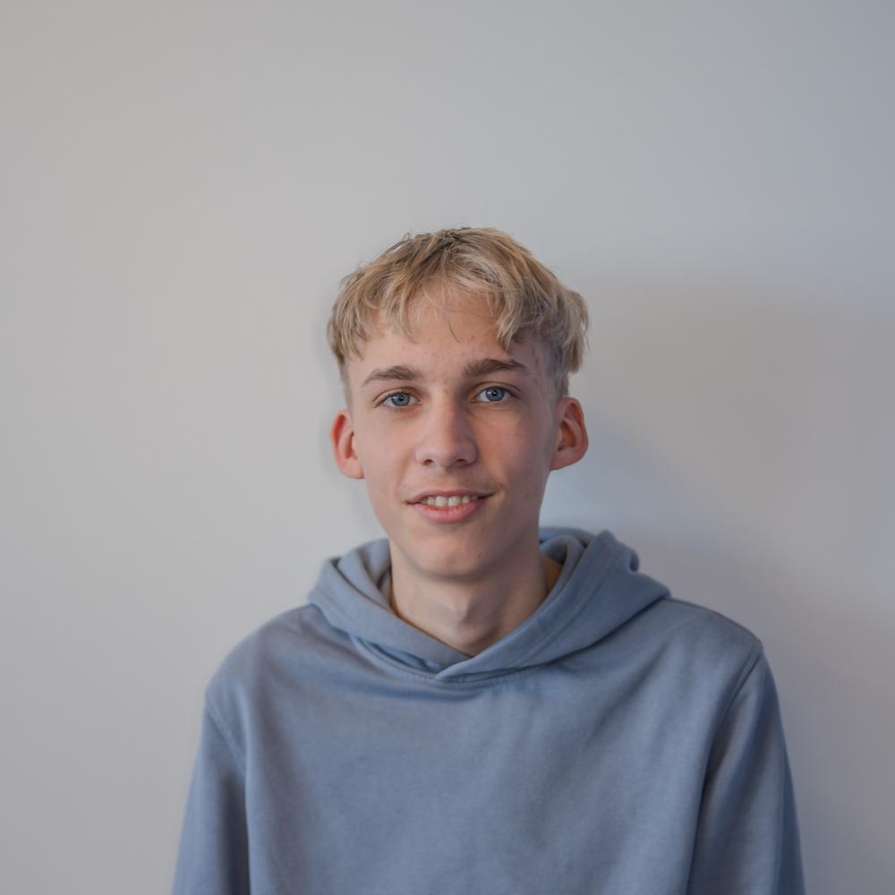
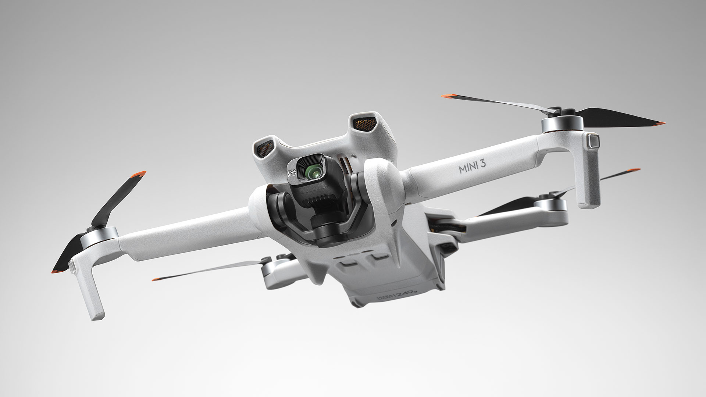
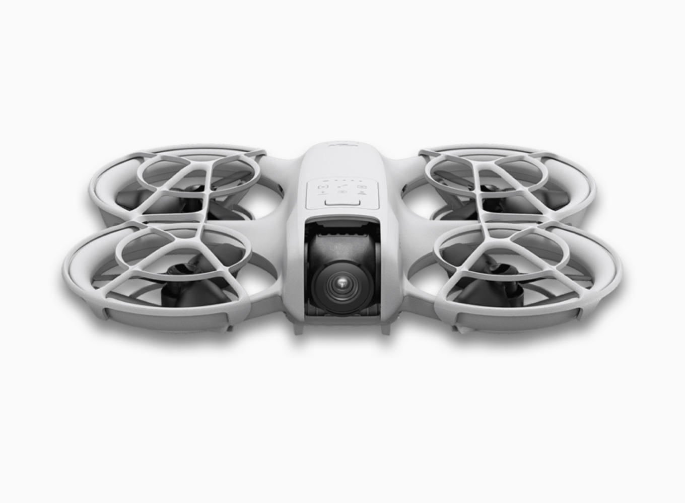

Over mij

Mijn naam is Samme, ik ben 17 jaar en de eigenaar van deze website. Ik heb een grote passie voor drones en luchtfotografie. Het lijkt mij geweldig om bedrijven, evenementen, woningen en andere projecten vanuit de lucht vast te leggen. Ik werk graag zorgvuldig en besteed veel aandacht aan het maken van mooie en unieke beelden. Met mijn drone wil ik foto's en video's maken die een bijzonder perspectief laten zien. Naast het vliegen met drones houd ik mij graag bezig met techniek en creativiteit. Zo heb ik deze website zelf gebouwd en ga ik in mijn vrije tijd graag op pad met de fiets. Ben je benieuwd wat ik voor je kan betekenen? Neem dan gerust contact met mij op.
Regels
Regels over dronevliegen
Ook zonder officieel vliegbewijs mag je in Nederland met een drone vliegen, mits je je aan de geldende regelgeving houdt.
- Vlieg maximaal 120 meter boven de grond.
- Houd je drone altijd binnen zichtafstand (VLOS).
- Vlieg niet boven mensenmenigten.
- Houd rekening met NoFly-zones
- Zones en andere vliegverbodenHoud rekening met de privacy van anderen
- Registreer jezelf als drone-exploitant wanneer dit verplicht is
- Voor drones vanaf 250 gram is doorgaans een vliegbewijs vereist
Veilig en verantwoord vliegen staat altijd voorop!
Regels over een afspraak maken
Houd zelf rekening met het weer. De neo kan bij een klein beetje wind niet meer opsteigen. De Mini 3 kan wel wat hebben. Als er neerslag word voorspelt is een vlucht niet mogelijk.
Voor indoor vliegen is alleen de Neo geschikt. De mini 3 is te gevaarlijk voor indoor vliegen.
Houd er altijd rekening mee dat eventuele reiskosten aan de rekening worden toegevoegd. woont u in provincie utrecht, en wilt u een afspraak doordeweeks maken, dan is de kans op reiskosten het kleinst
DJI Mini 3

Kwaliteiten
De DJI Mini 3 is de drone waarmee ik mijn dronebeelden maak en bijzondere locaties vanuit
een uniek perspectief vastleg.
Dankzij de hoogwaardige 4K-camera kan ik gedetailleerde foto's en vloeiende videobeelden
maken, waarbij landschappen,
natuur en gebouwen op een compleet andere manier tot hun recht komen.
Door zijn compacte en lichte ontwerp is de DJI Mini 3 gemakkelijk mee te nemen naar
verschillende locaties. De stabiele
vliegeigenschappen en slimme camerafuncties maken het mogelijk om indrukwekkende beelden te
creëren, zowel vanuit de
lucht als vanuit creatieve camerahoeken. Hierdoor kan ik locaties op een bijzondere manier
vastleggen en beelden maken
die je vanaf de grond niet zomaar kunt zien.
Voor mij is de DJI Mini 3 meer dan alleen een drone: het is een manier om creativiteit,
techniek en fotografie samen te
brengen.
Met de DJI Mini 3 leg ik niet alleen beelden vast, maar geef ik iedere locatie een nieuw
perspectief.
DJI Neo

Kwaliteiten
De DJI Neo is een compacte en veelzijdige drone waarmee ik op een creatieve manier
dronebeelden kan maken. Dankzij het
lichte ontwerp, de ingebouwde propellerbescherming en het gebruiksgemak is deze drone
bijzonder geschikt voor dynamische
beelden en unieke camerahoeken.
Wat de Neo voor mij extra interessant maakt, is zijn stevige en beschermde ontwerp. Hierdoor
kan ik bij het maken van
beelden wat meer risico nemen en experimenteren met camerahoeken en bewegingen waar ik met
mijn andere drone
voorzichtiger mee zou zijn. De propellerbescherming biedt daarbij extra bescherming bij
lichte aanrakingen en kleine
botsingen, al blijft voorzichtig vliegen belangrijk.
De DJI Neo geeft mij de vrijheid om nieuwe perspectieven te ontdekken en creatieve ideeën
uit te proberen. Vooral bij
dynamische opnames en bijzondere locaties biedt deze drone veel mogelijkheden.
Met de DJI Neo durf ik creatiever te vliegen en beelden te maken die nét even anders
zijn.
Galerij
Prijzen
| Pakket | Inhoud | Prijs |
|---|---|---|
| 📸 Standaard foto’s | 10–20 dronefoto’s, basis bewerking (rechtzetten + licht) | €10 |
| ✨ Bewerkt foto’s | 10–25 dronefoto’s, kleurcorrectie + betere afwerking | €15 |
| 🎥 Standaard video | 10–40 sec drone video, simpele montage + muziek | €25 |
| 🎬 Speciale video | 40–120 sec drone video, langere montage + betere flow | €50 |
| Onbeperkte sessie | max 180 sec edit video + max 100 foto’s eventueel bewerkt | €80 |
Contact
Afspraak maken of iets melden
Voor het maken van dronebeelden ben ik alleen beschikbaar binnen provincie Utrecht. Als ik met de trein moet en er zijn reiskosten behoren deze tot de rekening. Beschrijf in de mail zo uitgebreid mogelijk de opdracht en het pakket dat u hiervoor wilt gebruiken.
Email: sammepieper2009@outlook.com